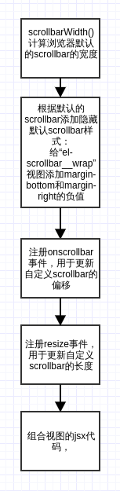

ElementUI源码分析-Scrolllbar组件
scrollbar组件可以通过设置native属性，是否使用自定义的scrollbar视图，默认为undefined即使用自定义的，下面也是主要分析自定义scrollbar的构成。
scrollbar视图的html代码由来年两层元素构成：
- 第一层：
el-scrollbar，样式设为overflow: hidden主要用于隐藏原生scrollbar； - 第二层：
el-scrollbar__wrap，用于存放内容的真实视图。1
2
3
4
5
6
7
8
9
10nodes = ([
wrap,
<Bar
move={ this.moveX }
size={ this.sizeWidth }></Bar>,
<Bar
vertical
move={ this.moveY }
size={ this.sizeHeight }></Bar>
]);
scrollbar的主要逻辑

1,计算浏览器scrollbar默认宽度
1 | / 通过离线创建一个容器，计算浏览器默认的scrollbar宽度 |
计算方式是离线创建一个容器，并使之产生scrollbar，根据产生scrollbar前后容器的宽度计算宽度：
1 | import Vue from 'vue'; |
2.撑大el-scrollbar__wrap容器隐藏原生scrollbar
1 | if (gutter) { |
3.添加自定义滑块模拟原生scrollbar
1 | nodes = ([ |
4.注册scrollbar事件
主要用于更新自定义bar的偏移位置
1 | handleScroll() { |
5.注册resize事件以及初始化滑块宽度
1 | methods: { |
bar组件
bar组件是对原生滑块的模拟，滑块由滑块容器以及滑块本身组成！
bar组件负责的主要功能是：计算滑块的偏移距离与滑块容器高度的比例，以次比例计算Scrill-view的偏移值。
实现的交互功能分别有两个：
- 点击滑块容器，移动scroll-view内容，通过给滑块容器绑定
mousedown事件触发； - 拖动滑块使移动scroll-view内容，通过绑定三个事件实现：
mousedown、mousemove``mouseup。
注意：
- bar组建的滑块自身的偏移不是由bar组建自身直接改变，而是根据根据传入的两个props属性绑定到滑块的style上实现的；
1
2
3
4
5props: {
vertical: Boolean,
size: String, // 滑块的长度
move: Number // 话快的偏移值
} - 滑块的偏移有css3的
tansfrom: translate()实现1
2
3
4
5
6
7
8
9
10
11export function renderThumbStyle({ move, size, bar }) {
const style = {};
const translate = `translate${bar.axis}(${ move }%)`;
style[bar.size] = size;
style.transform = translate;
style.msTransform = translate;
style.webkitTransform = translate;
return style;
};
1 | <div |
由滑块容器el-scrollbar__bar和滑块el-scrollbar__thumb组成。
点击容器移动滑块
容器元素监听onMousedown
1 | // 点击滑块容器，移动父元素的内容移动`$parent.wrap`的scrollTop/scrollLeft |
拖动滑块移动父容器内容
涉及到三个事件的监听：
onMousedown事件：负责触发事件；mousemove事件：负责计算滑块移动距离与容器高度的比例，以此更新父容器的scrollTopmouseup事件：负责移除mousemove事件的监听和整个功能结束的收尾。
点击触发，动态绑定mousemove和mouseup事件
1 | clickThumbHandler(e) { |
动态计算父容器内容的偏移
此时鼠标右键已经被按下且未放开
1 | // 移动鼠标，同步移动父元素容器的内容 |
结束滑块移动
鼠标右键放开，结束事件重置基本变量，解绑mousemove事件
1 | mouseUpDocumentHandler(e) { |
组件生命周期结束解绑mouseup事件
1 | destroyed() { |
附录
bar源码注释
1 | import { on, off } from 'zhuiyi-ui/src/utils/dom'; |